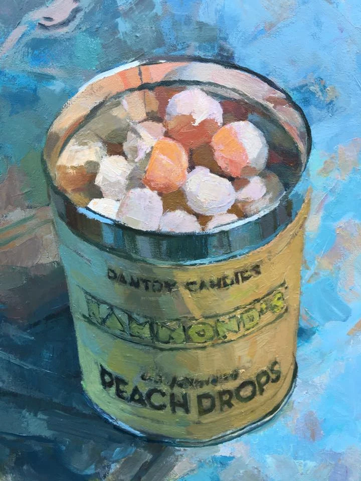

Info
I paint in oil, outdoors and from sight.
Most of my paintings are of streets and buildings around Boston and Northampton, Massachusetts.
I studied painting at Massachusetts College of Art and Design (BFA) and at the Art Students League of New York.
I also work as a designer. I am a Principal Interaction Designer at Lexia Learning, and before that I spent many years as an artist and art director in games.
Exhibitions
- 2026
Think SmallBromfield Gallery, BostonDecember 2 to 20. Coming up
- 2015
MassArt Auction26th annual, Boston
- 2009
Hosmer GalleryNorthampton. Three-person show with Emily Bradford and Sarah Adam.
- 2009
RANGEStorefront Artist Project, Pittsfield
- Collection
Forbes LibraryNorthampton. Permanent collection (Downtown Northampton).
Contact
Ask about a painting or a print. Email me and I'll get back to you.